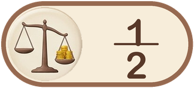
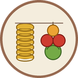
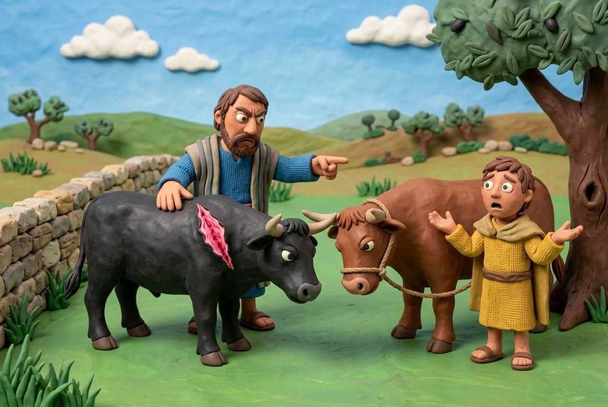
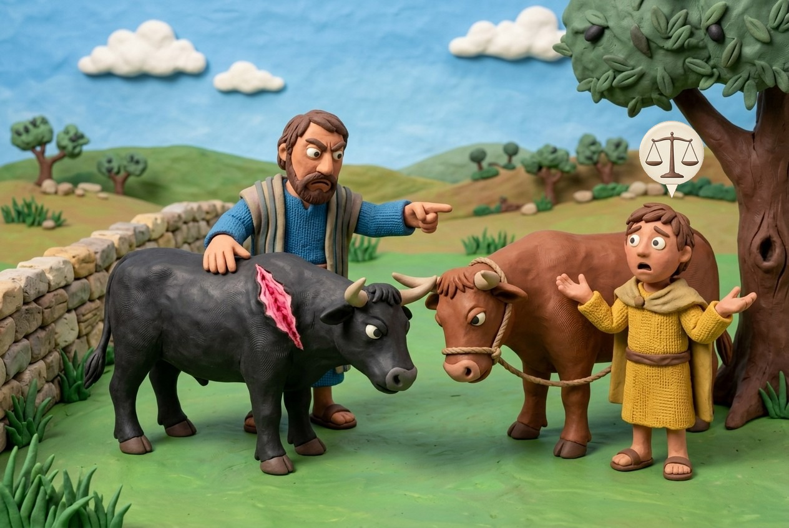
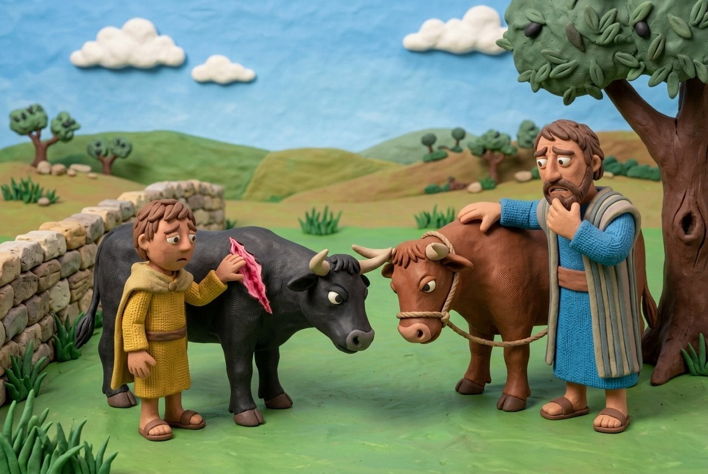
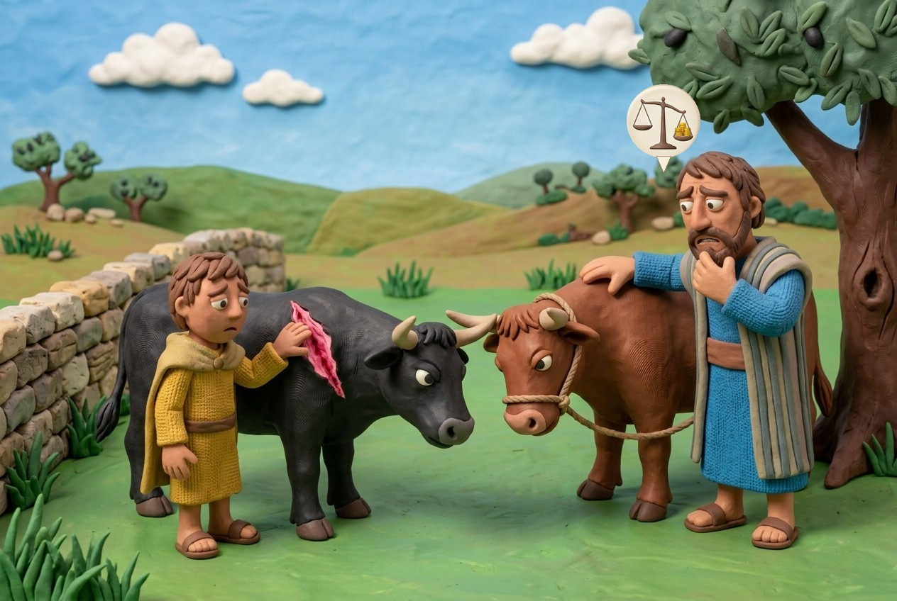

pays half
pays what it benefitedMishnah 1: A harmless ox that gores several oxen
A harmless ox pays only from its own body. When it gored several oxen in turn, Rabbi Meir has the last victim paid first; Rabbi Shimon has the victims share.
The case
- An ox gored four or five oxen, one after another. The owner pays the owner of the last ox injured; if money remains, the one before; and so on. The last benefits, according to Rabbi Meir.
Rabbi Shimon
- An ox worth 200 gored an ox worth 200 and the carcass is worth nothing: each owner gets 100. If it gores a third worth 200: the last gets 100, the previous 50. A fourth: the last 100, the previous 50, and the first two 25 each.
The two views
- One opinion: the owner of the injured ox becomes the new owner of the harmless ox, so he is responsible for its later damage. The other: he becomes a partner in the ox.
- The Gemara: Rabbi Meir follows Rabbi Yishmael (the injured is a creditor of the damager), Rabbi Shimon follows Rabbi Akiva (the injured becomes a partner in the ox).
Three oxen injured in turn (each worth 200; Kulp's table)
| Owner of the injuring ox keeps | First ox | Second ox | Third ox | |
|---|---|---|---|---|
| Rabbi Meir | 0 | 0 | 100 | 100 |
| Rabbi Shimon | 25 | 25 | 50 | 100 |
Mishnah 2: An attested danger for some things only
An ox can be an attested danger to one kind of victim and harmless to another, or on one day and not another. For the first it pays full damages, for the other half.
By kind of victim
- An ox that is an attested danger to its own kind but not to others, to people but not to beasts, to children but not to adults: for that for which it is an attested danger, full damages; for the rest, half.
- The owner must be extra careful where the ox is known to injure.
- For example, an ox seen standing with horses and camels and not goring is not an attested danger to those.
By day
- Rabbi Judah: an ox that is an attested danger on the Sabbath but not during the week pays full damages for Sabbaths and half damages for weekdays.
- It becomes harmless again after it refrains from injury for three Sabbath days.
Full or half damages
| The ox is an attested danger | Not an attested danger | The owner pays |
|---|---|---|
| to its own kind | to other kinds | full for the first, half for the second |
| to people | to beasts | full for the first, half for the second |
| to children | to adults | full for the first, half for the second |
| on the Sabbath (Rabbi Judah) | during the week | full on Sabbaths, half on weekdays |
Mishnah 3: Property of the Temple, of a gentile
An Israelite's ox that gores a sacred ox or a gentile's ox is exempt. A gentile's ox that gores an Israelite's pays full damages, harmless or not.
The cases
- An Israelite's ox that gored an ox of the Temple, or the Temple's that gored an Israelite's: exempt, since the verse says "his neighbour's ox" (Exodus 21:35), not the Temple's.
- An Israelite's ox that gored a gentile's: exempt. A gentile's ox that gored an Israelite's, harmless or not: full damages.
Why
- The first clause is a midrash on the words "his neighbour".
- For the gentile cases Kehati gives reasons: the Gemara says the seven commandments of Noah were not kept by the nations, so their property was released to Israel; Rambam says it is a fine, since gentiles do not guard against damage; Meiri says it applies to nations not bound by religious norms.
Mishnah 4: Oxen of a deaf-mute, an insane person, a minor
The owner of a sound ox who injures the ox of a deaf-mute, insane person or minor pays. Their ox that injures a sound person's ox: exempt. The court appoints a guardian.
Who pays
- An ox of a person of sound senses that gored the ox of a deaf-mute, insane person or minor: obligated. The reverse: exempt.
- These are people not capable of fully knowing the consequences of their actions, so they cannot be held responsible.
A guardian, and becoming sound
- If their ox gored, the court appoints a guardian, and the ox is warned in front of him.
- If the deaf-mute becomes of sound senses, the insane person recovers, or the minor comes of age: Rabbi Meir says the ox is harmless again; Rabbi Yose says it remains as it was.
- Rambam follows Rabbi Yose. The Gemara gives Rabbi Meir's reason: a change of owner changes the ox's status.
The arena ox
- An ox trained for the stadium is not liable to death, as it says "when it will gore" and not "when others cause it to gore".
Whose ox, whose ox
| Whose ox gored | Whose ox was gored | The owner of the goring ox |
|---|---|---|
| a person of sound senses | a deaf-mute, insane person or minor | pays |
| a deaf-mute, insane person or minor | a person of sound senses | exempt |

 ?
?
?
 ?
?
?Mishnah 5: An ox that kills a person
An ox that kills a person is stoned. An attested danger's owner also pays ransom; a harmless ox's owner does not. For a slave, thirty sela.
The cases
- An ox gored a person and he died: if it was an attested danger, its owner pays the ransom (kofer); if harmless, he is exempt from it. In both cases the ox is put to death.
- The same for a son or a daughter. For a male or female slave: its owner pays 30 sela, whether the slave was worth a maneh or not a dinar.
Background
- The Torah's verses: Exodus 21:28-32. The ox is stoned and its meat forbidden; the owner of an attested danger could in principle deserve death, but the Torah allows him to ransom his life.
- Kofer is the value of the person killed.
An ox that kills a person
| Victim | Harmless ox | Attested danger |
|---|---|---|
| A free adult, a son or a daughter | ox stoned; no ransom | ox stoned; owner pays ransom |
| A slave or maidservant | ox stoned; owner pays 30 sela | ox stoned; owner pays 30 sela |
Mishnah 6: An ox that did not intend to kill
An ox is judged by its intention. If it did not mean to kill a person, it is exempt from death.
The cases
- An ox rubbing against a wall that fell on a person; an ox that intended to kill an animal and killed a man; one that intended to kill a gentile and killed an Israelite; one that intended to kill an untimely birth and killed a viable infant: exempt from death.
- In all of these the ox meant to kill something for which it would not be liable to death. We judge the ox by its intention, not its action.
The ox's intention
| The ox | Result |
|---|---|
| rubbed against a wall that fell on a person | exempt from death |
| intended to kill an animal and killed a man | exempt from death |
| intended to kill a gentile and killed an Israelite | exempt from death |
| intended to kill an untimely birth and killed a viable infant | exempt from death |
Mishnah 7: Oxen of those with no adult male owner
The ox of a woman, orphans, a guardian, or a wild, Temple or convert's ownerless ox that kills is put to death. Rabbi Judah exempts the ones with no owner. The halakha does not follow him.
The list
- The ox of a woman, of orphans, of a guardian, a wild ox, an ox of the Temple, or of a convert who died without heirs: all are liable to death.
- Rabbi Judah: a wild ox, a Temple ox and a convert's ox are exempt, since they have no owners.
- Rabbi Judah derives this from Exodus 21:28-29: the ox is put to death only where the owners can be warned.
Halakha
- The halakha does not follow Rabbi Judah.
R. Kulp's commentary
The ox of a woman, or the ox of orphans, or the ox of a guardian, or a wild ox, or an ox belonging to the Temple, or an ox belonging to a proselyte who died and has no inheritors, these are all liable for the death penalty. Rabbi Judah says, “A wild ox, or an ox belonging to the Temple, or an ox belonging to a proselyte who died are exempt from death, since they have no owners.” Mishnah seven begins with a list of oxen owned by those other than adult Jewish males. Although for various reasons one might have thought that these oxen are not liable for the death penalty, the mishnah decrees otherwise. In all cases the ox is liable for the death penalty. In section two Rabbi Judah disagrees with the opinion expressed in section one. According to R. Judah if the ox does not have owners, the Torah does not demand that it be put to death. Rabbi Judah’s opinion is probably based on a midrash on Exodus 21:29, which describes the process of warning the goring ox’s owners, a process which lead to the ox being declared an attested danger. According to Rabbi Judah in order to fulfill the law mentioned in Ex. 21:28, namely killing the goring ox, one must be able to fulfill the law in verse 29, which would require the ox to have owners. In other words since one cannot warn the owners, as verse 29 states, one need not execute the ox, as verse 28 states. A note is required about the laws of inheritance for a proselyte. According to the Rabbis’ a proselyte does not “Biblically” inherit from anyone in his family that did not convert, but his inheritance is only ordained by the Rabbis themselves. Therefore, when a proselyte dies without children or a spouse, his property would have no “Biblical” inheritors. Since the requirement to stone the ox is a Biblical command, with regards to this law the ox is considered ownerless.
Questions for Further Thought: • Why do you think the Rabbis allowed a person to derive benefit from a goring ox if they slaughtered it before the court pronounced the sentence? Why shouldn’t the Rabbis be concerned that people will take advantage of this law and slaughter their goring oxen before the sentence is complete?
Mishnah 8: Dedicating an ox that is going to be stoned
An owner cannot dedicate or slaughter an ox once sentence is complete. Before that, his act is valid.
After the sentence
- If an ox goes out to be stoned and its owners dedicate it, it is not dedicated. If he slaughtered it, its flesh is forbidden.
Before the sentence
- If before its sentence was complete its owner dedicated it, it is dedicated; if he slaughtered it, its flesh is permitted.
- He tries to cheat the system by getting credit for a sacrifice or food and leather for himself.
Kehati's notes
- After the sentence the flesh is forbidden to eat and to benefit from.
An ox sentenced to stoning
| Dedicated to the Temple | Slaughtered | |
|---|---|---|
| After the sentence is complete | not dedicated | flesh forbidden |
| Before the sentence is complete | dedicated | flesh permitted |
Mishnah 9: Guards, and an ox that was properly guarded
A guard takes the owner's place. If the owner tied or locked the ox properly and it still damaged, the sages dispute: Rabbi Meir, Rabbi Judah and Rabbi Eliezer. The halakha follows Rabbi Judah.
A guard takes the owner's place
- If one handed it to an unpaid guardian, a borrower, a paid guardian or a hirer, they take the place of the owners: full damages for an attested danger, half for a harmless one.
An ox properly guarded
- If its owner tied it with a halter or locked it up properly, but it came out and caused damage: Rabbi Meir: liable, whether an attested danger or harmless.
- Rabbi Judah: if harmless he is liable; if an attested danger he is exempt, as it says "and its owner did not guard it", but this one was guarded.
- Rabbi Eliezer: its only guarding is the knife.
Kehati's notes
- Rabbi Judah's exemption is from the full payment: the owner still pays half damages.
- There are three views about an attested danger that was guarded: Rabbi Meir: liable if the guard was weak, exempt if strong; Rabbi Judah: exempt from the full payment even with a weak guard; Rabbi Eliezer: liable even with a strong guard.
Halakha
- The halakha follows Rabbi Judah.
A tied or locked ox that got out and damaged
| Rabbi Meir | Rabbi Judah | Rabbi Eliezer |
|---|---|---|
| liable, harmless or attested danger | harmless: liable; attested danger: exempt | its only guarding is the knife |
R. Kulp's commentary
If one handed it to an unpaid guardian, or to a borrower, or to a paid guardian, or to a hirer, they take the place of the owners; if the beast was an attested danger he pays full damages, and if it was accounted harmless he pays half damages. Section one states quite clearly that any time an owner turns his ox over to another person who has agreed to watch the ox, that person will be responsible for any damages that the ox causes under his guardianship. The real point of this mishnah is that even an unpaid guardian, who neither gets use of the ox nor financial compensation for his guarding, still has liability for damages the ox will cause. In other words, clearly a borrower should be liable in such a case, since he gets the use of the ox and doesn’t even have to pay for it. A hirer also gets the use of the ox, even though he pays for it, so he too should be liable. A paid guardian, while not getting use of the ox, is receiving financial compensation for his guardianship and therefore it is reasonable for him to be liable for damages. However, an unpaid guardian does not receive anything in return and is in essence doing a favor for the owners. The mishnah therefore emphasizes that even so he is liable if the ox should cause damage.
If its owner had tied it with a halter, or locked it up properly, but it came out and caused damage, the owner is liable, whether it was an attested danger or accounted harmless, these are the words of Rabbi Meir. Rabbi Judah says: “If it was accounted harmless he is liable, but if it was an attested danger he is exempt, as it says, “and its owner did not guard it”, but this one has been guarded. Rabbi Eliezer says: “Its only guarding is the knife.” Section two deals with the obligation an owner has to guard his ox. According to Rabbi Meir, tying up an ox or locking it in a pen is evidently not enough protection to exempt one from damages the ox will cause. Therefore, even if the owner performed these acts, he will still be obligated for damages the ox will cause. According to Rabbi Judah, with protection such as tying it up or locking it in, the owner exempts himself from liability for damages caused by an ox that is an attested danger. There is something slightly perplexing with regards to Rabbi Judah’s statement. In the case that he describes an owner may be more obligated for an ox that is a tam, accounted harmless, than for an ox that is a muad, an attested danger. There are two possible answers to this point. First of all, the Torah mentions “guarding” only with regards to the muad, attested danger. Rabbi Judah may be reading the Torah literally. He therefore states that only with regards to the muad is guarding relevant. Guarding a tam will not exempt one from paying for its damages. Secondly, according to the Talmud’s reading of Rabbi Judah’s opinion, if he ties up the ox which is a muad or he locks it in although he will not be obligated for full damages, he will be obligated for half damages. In other words, according to the Talmud, Rabbi Judah does not hold the opinion that one could be more liable for a muad than for a tam. ] Rabbi Eliezer believes that the only way to guarantee that an ox which is an attested danger will not cause damage again is to slaughter the ox. In other words, even though he tied it up or locked it in, he is still obligated for full damages for the muad and half damages for the tam.
Questions for Further Thought: • Why should the unpaid guardian be liable if the ox causes damages? • According to Rabbi Meir, locking the ox in or tying it up is not sufficient to exempt one from damages the ox might cause. What then must the owner do, according to Rabbi Meir, in order to properly guard the ox? • What might be some modern equivalents to these laws?
Chapter summary
Draft from the mishnah, R. Kulp and Kehati.
Key principles
- A harmless ox (tam) pays only from its own body; the injured owner is either a new owner or a partner in it (Rabbi Meir and Rabbi Shimon). 4:1
- An ox can be an attested danger (mu'ad) for one kind of victim or one day, and harmless (tam) for others: full damages for the one, half for the other. 4:2
- An Israelite's ox is exempt for damage to Temple property and to a gentile's ox; a gentile's ox pays full damages to an Israelite. 4:3
- An ox that kills a person is stoned; the owner of an attested danger (mu'ad) pays ransom (kofer), the owner of a harmless one (tam) does not. 4:5
- An ox is judged by its intention: it is exempt from death if it did not intend to kill a person. 4:6
- A guard takes the owner's place; an owner who tied or locked his ox properly: the sages dispute, and the halakha follows Rabbi Judah. 4:9
Key terms
- ransom (kofer) כופר 4:5
- The payment an owner of an attested danger makes to ransom his life when his ox kills a person. It is the value of the person killed.
- guardian (apotropos) אפוטרופוס 4:4
- A person the court appoints to watch the ox of a deaf-mute, insane person or minor.
- paid guardian, borrower, hirer שומר שכר, שואל, שוכר 4:9
- People to whom an ox is handed; they take the owner's place for its damage.
Key debates
What does the injured owner become? 4:1
Rabbi Meir: a creditor, paid first from the last victim backward.
Rabbi Shimon: a partner in the ox, so the victims share.
Is the ox harmless again when its owner recovers? 4:4
Rabbi Meir: harmless again.
Rabbi Yose: it remains as it was. Rambam follows Rabbi Yose.
A properly guarded ox that still damages 4:9
Rabbi Meir: liable, harmless or not. Rabbi Judah: harmless, liable; attested danger, exempt from the full payment.
Rabbi Eliezer: its only guarding is the knife. The halakha follows Rabbi Judah.